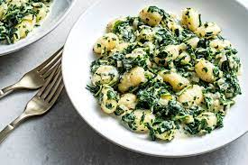
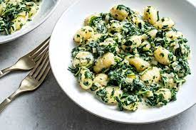

Gnocchi with Creamed Spinach
 

Soft, Delectable Vegetarian Pasta
In a rush? This pasta dish made with spinach is the perfect meal. Despite how simple it is to make, the dish carries a sense of elegance. Pair it with your favorite refreshing beverage, such as a glass of wine, to unwine afer a long work day.
Ingredients
- Salt and pepper
- 1 package of gnocchi
- 1 package of frozen cream of spinach, defrosted
- 1/2 cup heavy cream
- 1/2 cup Parmesan, grated
- 1/8 teaspoon nutmeg
- Lemon zest, to garnish
Steps
- In a large pot of salted water, cook gnocchi according to package directions.
- While the gnocchi is cooking, cook the cream of spinach in a nonstick skillet over medium heat, for 3 to 4 minutes.
- Season the cream of spinach with salt and pepper. Add parmesan, nutmeg, and gnocchi. Stir until coated.
- Serve garnished with lemon zest.